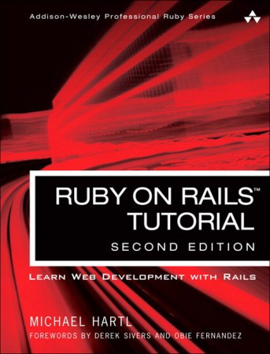

If you don’t know Ruby on Rails (RoR), this book will help you learn how to develop a Rails web application.
I have read many tutorial books that are just terrible. Those books have massive amounts of useless code with little explanation of what is going on. Those authors aim for high page count so that the dead tree version can be thicker to justify the high cost in a book store.
The RoR Tutorial includes a lot of code, but the code was well explained and felt meaningful. Additionally, the author, Michael Hartl, is serious about Test Driven Development (TDD) so he includes a lot of test code. The use of TDD might have been my favorite feature of the book. While learning about data modeling, templates, and app logic, Hartl shows you how to test those things. The benefits to this are twofold:
I could enumerate all the topics that Hartl covers in Rails, but the book is online so it would be better to just go read the table of contents. I’m not a seasoned RoR developer so I don’t know how exhaustive he truly was, but the content seemed pretty thorough to me.
Overall, this is a very good introduction to the Ruby on Rails world. You don’t have to be a pro at Ruby. And you don’t have to be a pro at web development. The Ruby on Rails Tutorial is a good book for those that want to move from a beginner’s level of experience to an intermediate level.
If you want to chat about this with me, I'm @mblayman on Twitter.